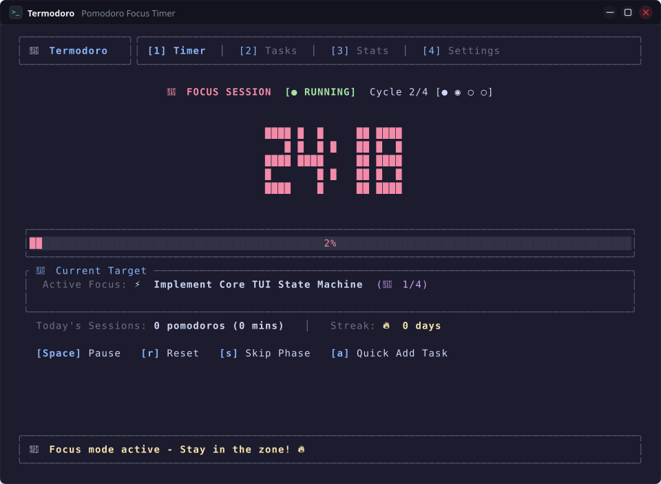
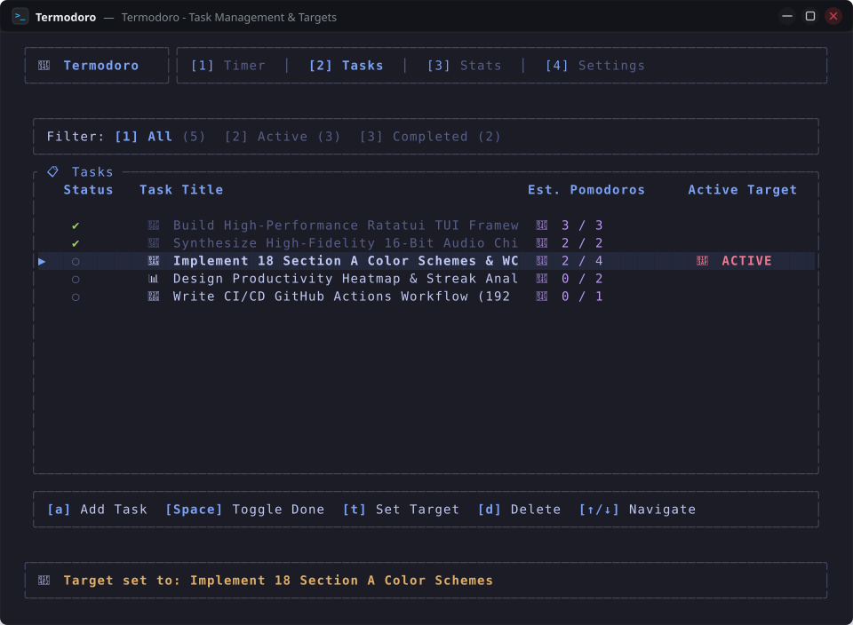
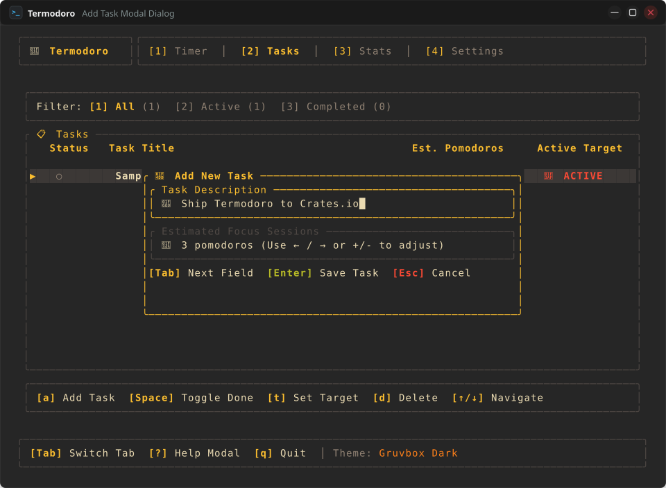
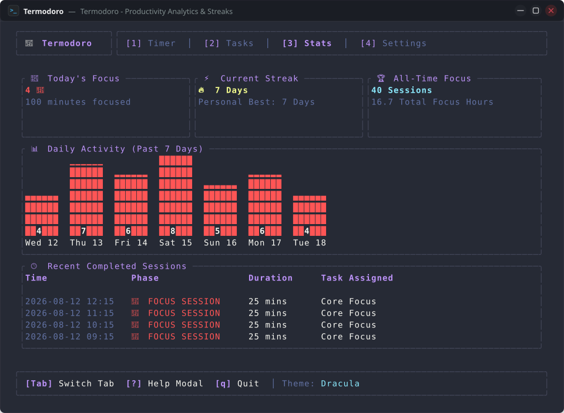
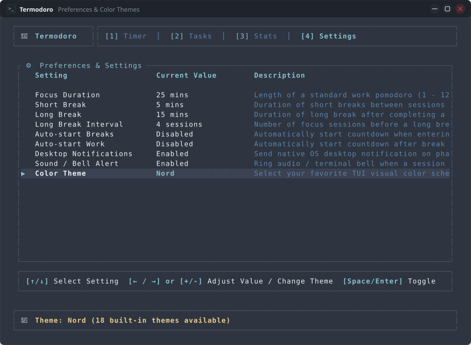
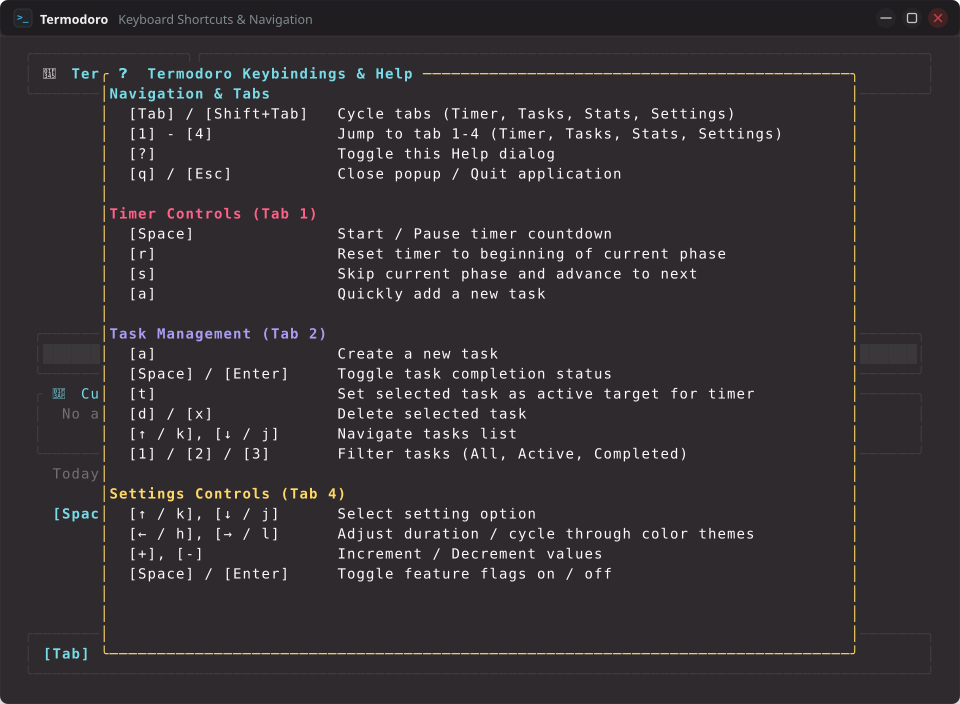

Every Feature Engineered for Deep Focus
Explore the design, mechanics, and keyboard workflows of Termodoro. Everything you see is rendered in genuine KDE Konsole terminal captures.
1. Precision Countdown & Cycle Progression
A distraction-free, 1-second accurate Pomodoro timer with big 5-line ASCII block digits, dynamic progress gauge, and 4-phase cycle tracking.
- Big Block Font Clock: 5-row tall ASCII rasterizer rendered in character cells, instantly readable from across the room.
- Full Cycle Loop: Automatic progression through Work Sessions → Short Breaks → Long Breaks after configurable intervals (default: 4 sessions).
- Cycle Tracker Dots: Visual indicator showing progress through the current set (e.g.
Cycle 2/4 [● ◉ ○ ○]). - Active Target Integration: Displays the active task title and Pomodoro count right beneath the progress bar.
- Contextual Keybindings:
[Space]Start/Pause •[r]Reset •[s]Skip Phase •[a]Quick Add Task.

2. Task Backlog & Active Target Linking
A built-in task manager tightly integrated into your focus workflow. Assign estimated Pomodoro goals and mark tasks as active targets.
- Target Linking (
[t]): Set any task as the🎯 ACTIVEtarget for your current countdown interval. - Visual Progress Blocks: Track completed Pomodoros against estimates in character cells:
[■■□□] 2/4 🍅. - Status Toggling (
[Space/Enter]): Instantly mark items completed (✔) with strikethrough typography or reopen active items (○). - Fast Filtering (
[1] / [2] / [3]): Switch filter tabs betweenAll (N),Active (N), andCompleted (N). - Instant Creation Dialog (
[a]): Floating modal with title input and Pomodoro estimate adjustment (1 – 20).


3. Productivity Analytics & Daily Streaks
Gain visibility into your daily focus routines, maintain your daily Pomodoro streak, and inspect recent completed sessions.
- Today's Focus Metric: Total Pomodoro sessions completed and cumulative focus minutes logged today.
- Daily Streak Engine: Consecutive active focus days (
🔥 7 Days) with calendar midnight rollover and all-time personal bests. - 7-Day Focus Distribution: Vertical BarChart widget rendered with Unicode bar pillars for Monday through Sunday.
- Session Audit Log: Detailed history table recording completion timestamps, phase types (Focus/Break), duration, and associated task.

4. Preferences & 18 Hand-Crafted Themes
Fully customize timer intervals, automation behaviors, acoustic alerts, and visual color schemes without touching raw config files.
- Interactive Settings Table: 4-column Ratatui table (
Pointer,Setting,Current Value,Description) navigable via[j/k]and adjustable via[h/l]or[+/-]. - Custom Interval Control: Focus duration (1 - 120 mins), Short Break (1 - 60 mins), Long Break (1 - 90 mins), Long Break Interval (1 - 24).
- Automation Flags: Toggle auto-starting breaks, auto-starting work sessions, and desktop notifications.
- 18 Curated Palettes: Catppuccin Mocha/Macchiato/Frappé/Latte, Nord, Gruvbox, Tokyo Night, Dracula, Rose Pine, One Dark, Kanagawa, Everforest Dark/Light, Solarized Dark/Light, Synthwave '84, Monokai Pro, OLED Phosphor.

Procedural Phase Transition Sound Cues
Termodoro does not use bulky MP3 files or external sound assets. Instead, it mathematically synthesizes 16-bit PCM RIFF WAV audio in memory, playing distinct acoustic cues for each timer transition.
Focus Complete: 528 Hz Zen Bowl
Plays automatically when a focus Pomodoro session finishes. Synthesizes a resonant 528 Hz tone with 1056 Hz and 1584 Hz harmonic overtones and smooth exponential decay.
Short Break Complete: D5 → A5 Chime
Plays automatically when a short break interval concludes. Synthesizes an upward melodic step from D5 (587.33 Hz) to A5 (880 Hz) to gently bring you back to work.
Long Break Complete: C-E-G Triad
Plays automatically after completing a full cycle's long break. Synthesizes a bright C5 (523.25 Hz) → E5 (659.25 Hz) → G5 (783.99 Hz) major triad arpeggio.
Settings → Sound / Bell Alert or muted globally.
6. Built for tmux, Zellij & High-Efficiency Workspaces
Compiled to single native binaries with zero runtime dependencies. Designed to run comfortably in a side-pane or background scratchpad.
- Sub-10ms Startup: Launches instantly from any shell without startup lag.
- Under 15MB Memory Footprint: Uses orders of magnitude less memory than Electron or web wrapper timers.
- Strict Local Privacy: All task backlogs and session stats are stored locally adhering to XDG standards (
~/.local/share/termodoro/data.json). Zero cloud dependencies, zero telemetry, zero analytics tracking. - Floating Help Overlay (
[?]): In-app searchable keybindings modal for instant shortcut discovery.

Ready to Elevate Your Terminal Productivity?
Install Termodoro in seconds with Cargo and start your first distraction-free Pomodoro session.